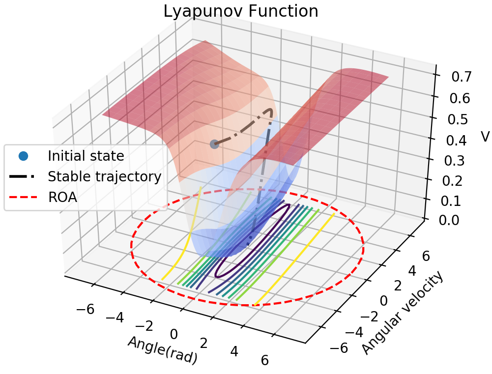

About Me
I am a PhD student in Computer Science and Engineering Department at UC San Diego. My advisor is Professor Sicun Gao, and we are currently working on control and planning problems in robotics. I received my master degree in Applied Mathematics from National Tsing-Hua University. My master thesis focus on analyzing the stability of dynamical systems in mathematical biology.
Research Interests
Robotics, Nonliear Dynamical Systems and Control.
Publications

Neural Lyapunov Control
NeurIPS (Conference on Neural Information Processing Systems) 2019

Stabilizing Neural Control Using Self-Learned Almost Lyapunov Critics
ICRA (International Conference on Robotics and Automation) 2021